§ Clouds: Agreement in Distributed Systems
Agreement is the crown problems in Distributed systems → How to make different nodes work together even while they have different view. The Agreement Problem is essentially the scenario that
some nodes propose value v and some nodes propose value v' and now all nodes need to have a way to decide which value to accept!. The values that these nodes agree on can be something like
- whether or not to commit transaction to DB
- Who has a lock in a distributed lock service, when multiple clients are requesting it
- Whether to move to a new stage etc.
The fundamental requirements here are:
- Safety → All nodes agree on the same value, which is proposed by some node
- Liveness → If less than some fraction of nodes crash, the rest should still reach an agreement
Failure Models help us understand classes of failures, ad in this case we use 2 models:
- Synchronous Systems → We set a timer and compare the activity of each machine to that. Thus, if the machine is inactive after the timeout, we know there is a failure because either hte machine crashed or the network is slow
- Asynchronous Systems → systems can arbitrarily be delayed and so there is no proper way to tell if the machine is just slow or if it has crashed.
Agreement problem comes in two flavors:
- Atomic Commitment Problem → Participants need to agree on a value but each has its own specific constraint on what makes a value acceptable. Thus, the issue is whether a participant can individually commit or not. For example, people agreeing on a time to meet together is a commitment problem since everyone might not be comfortable at all times.
- Consensus Problem → Participants need to agree on a value and they are willing to accept any value. For example, people have decided when to meet and now the issue is where to meet and everyone is 'fine with any place' as long as they get to meet
§ Atomic Commitment
The origin of this problem comes from partitioning DB to store and access them in a distributed manner. For example, in the way of 3 copies of chunks in GFS, and this creates Semantic Challenges → We usually segregate the DB into shards based on certain criteria. For example, a Banking application getting end-client requests from users might segregate it into 3 shards based on User-ID . However, what happens when transactions span multiple shards ? For example, a transaction involving a user in one node and another user in another shard → How do we manage agreement and the related issues of atomicity and sharing ?
§ Single Phase Commit
This is a simple way of managing atomicity in which a transaction coordinator is assigned with the following responsibilities:
- It begins the transaction and assigns unique IDs
- It is responsible for commits and aborts
Many systems allow any client to be the co-ordinator and thus, the servers with the data would be the participants. When a commit is validated by the coordinator, it broadcasts
'commit' and waits for all participants to acknowledge
- Issue → What if one participant fails? The other participants cannot undo what they have already committed, as instructed by the coordinator
§ 2-Phase Commit
Here we break down the comi into 2 phases:
- Voting → Each participant prepares to commit and votes on whether it can commit or not commit
- Commit → Each participant commits or aborts
This can be realized through the following operations :
-
canCommit(V) → Coordinator asks the participants whether they can commit the value V -
doCommit(V) → the Coordinator asks the participant to actually commit the value V -
doAbort(V) → The Coordinator asks te participant to abort the commit process -
haveCommitted(participant, V) → Participant tells the coordinator if it actually committed value V -
getDecision(V) → Participant can ask the coordinator if V can be committed or not
In the voting process, the coordinator asks the participants whether they can commit or not through
canCommit. The participants prepare to commit using
permanent storage and write
prepare-yes to the log. Once the participant replies yes to the
canCommit, they are not allowed to abort. However, the outcome of event V is uncertain till the doCommit or doAbort happens. The coordinator, then, collects all the votes. If there is a unanimous yes from the participants, then the commit is a go. However, even if one participant votes No, then the commit is aborted. After Voting the coordinator records the fate in permanent storage and then issues the
doCommit or
doAbort to the participants. Following is a timeline of this process:
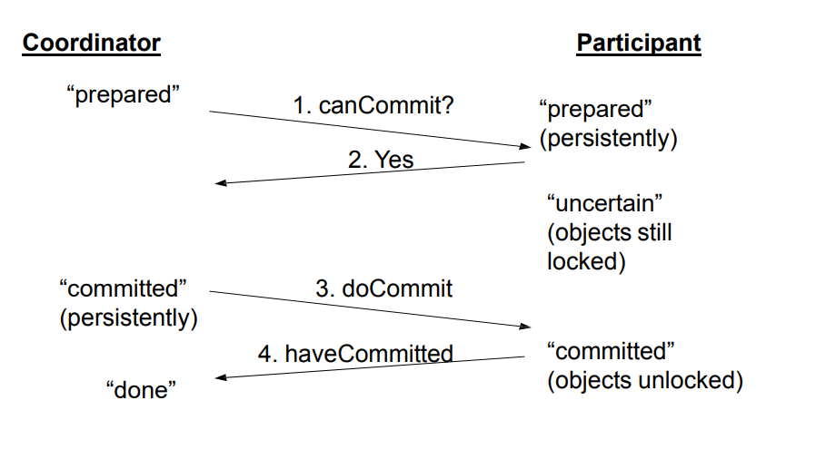
The following figure shows the state transitions for participant and coordinator:
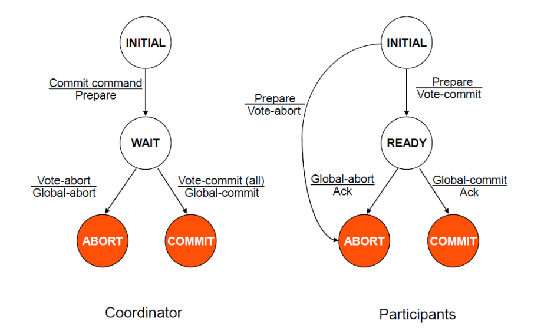
Now, we can see that that recovery in this scenario is easy → since the participants have been logging their state changes, we can track them. However, these can be differentiated on the basis of timeouts and failures. In timeouts, the issue is that the
ACK has not been sent by the participant while in failures, there will be an
ACK.
§ Handling Timeouts
From the coordinator's perspective, two timeout scenarios are relevant:
- Timeout happens in the wait state → In this case the coordinator cannot unilaterally commit or abort
- Timeout in Commit or Abort States → Here, since the commit has already begun, there is nothing that the coordinator can do but wait for
ACK.
From the perspective of the participants, following scenarios are possible :
- Timeout in Initial State → The only way this is possible is if the coordinator has failed the change. Thus, unilaterally Abort
- Timeout in Ready → Since the participant is in an uncertain state where the decision to commit or abort hasn't been made, a termination protocol needs to be activated, which can be blocking or co-operative:
In
Blocking protocols, we the node waits until communication can be re-established. In
cooperative protocol,
the node asks the other participants about the information of the commit and proceeds as follows:
- Q in commit → P can move to commit
- Q in Initial → P must Abort
- Q in Abort → P must abort
- Q in Ready → Contact another proces
- The protocol blocks if everyone is in READY
§ Handling Failures
From the coordinator, the following scenarios are possibe :
- Failure in Initial state → Start the commit upon recovery
- Failure in Wait state → Restart the commit after recovery
- Failure in Abort or Commit States → If all ACKs have been received, do nothing. Otherwise, a termination protocol is needed
From the participant , the following scenarios are possible :
- Failure in Initial → Unilaterally Abort
- Failure in Ready State → The Coordinator has been informed already, follow the termination protocol, blocking or cooperative
- Failure in Commit or Abort → Nothing special needs to be done
The 2 phase commit is called a blocking protocol because it cannot make progress during failures. For example, if the TC sends a message to a node and it commits, but then both crash, then all other nodes need to keep waiting for them to recover since they can't be sure of what to do → A could have sent either yes or no to canCommit and so, they can't move forward! → T
his also makes 2PC vulnerable to the failures of the TC Node. Thus, 2PC is safe, but not live!
§ 3-Phase Commit
The idea here is to alleviate the blocking nature of 2PC by splitting commit into 2 phases:
- Communicate te outcome to everyone
- Let them commit only after everyone knows the outcome === ACK
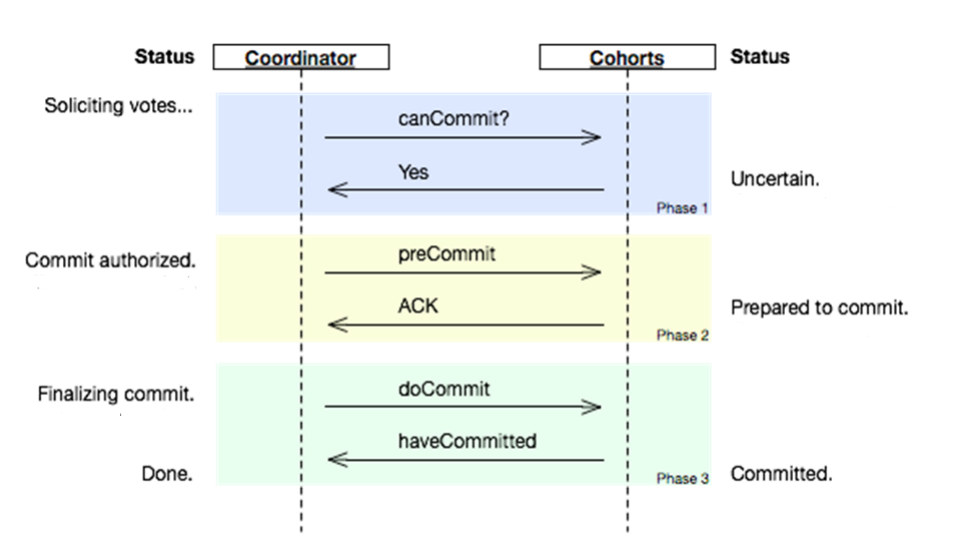
It is clear in the timeline, we now have a preCommit message and an associate ACK, after which the commit can happen. The relevant state transitions now become :
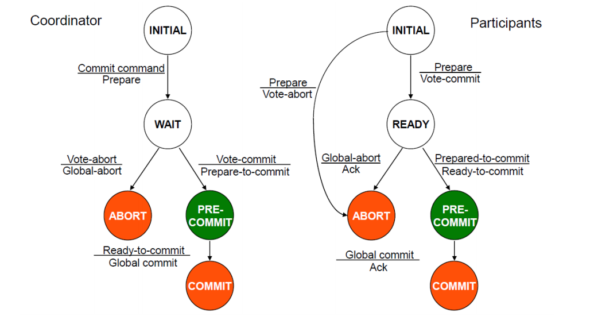
The blocking issue of 2PC can now solved as follows : If both TC and a node fail :-
- If even one of the nodes has received a pre-commit → They all commit
- If no one received a preCommit → Unilateral Abort
Thus, we now have a live protocol. However, while it is safe in the case of the failure of TC and node, it is not safe in the cases where TC or node are just offline and not actually crashed. The following Scenario is a good example:
- A receives prepareCommit from TC
- Then, A gets partitioned from B/C/D and TC crashes
- None of B/C/D have received prepareCommit, hence they all abort upon timeout
- A is prepared to commit, hence, according to protocol, after it times out, it unilaterally decides to commit
This is a classic example of Asynchronocity! 3PC guarantees safety and liveness for synchronous machines since in that case we know the upper bound for message delays and can see if timeout exceeds that to determine if a system has crashed or not!
§ Fischer-Lynch-Paterson Impossibility Result (FLP)
- Thus, we see that 3PC trades safety for liveness, while 2PC trades liveness for safety. The obvious question is "Can we design a system that is both safe and live in the general scenario ? "
- The answer is NO!
- According to the FLP Result, It is impossible for a set of processors in an asynchronous system to agree on a binary value, even if only a single process is subject to an unannounced failure.
- However, the FLP result does not talk about asymptotic sense with safety and liveness i.e. it never specifies how close a system can get to Safety and Liveness, without actually ideally reaching it!! This leads us to Consensus protocols like Paxos, Raft that actually get close in practice
§ Consensus
The consensus problem for a collection processes
Pi can be described as follows:
- The processes propose values Vi and send messages to others to exchange proposals
- Different processes propose different values, but they all need to accept a single value, which can be any one of the proposed value
- Only one of the proposed values can be chosen and all nodes need to know this one value
This puts the following constraints:
- Consistency → Once a value is chosen, the chosen value for all working processes is the same
- Validity → The chosen value was proposed by one of the processes
- Termination → Eventually all processes agree on the same value
§ Process Reliance
The core idea behind process resilience is that even if some processes fail, we should be able to deliver to the client's request. to achieve this, we develop methods to
replicate the process so that we have ways of getting a backup process running
- K-Fault Tolerant Group → A group of processes that can mask any K-concurrent failures of their member processes. Here, k is called the degree of fault tolerance.
In this group, we make assumptions about the members:
- They are all working identically
- They process commands in the same order
Thus, now we basically need a way to ensure that
Non-faulty group members reach a consensus on which command to execute next
§ Flooding-Based Consensus
§ Model
- The process group is P={Pi}
- Every process either fails or runs, there is no mid-way. Thus, the process has a Fail-Stop model in which on failure it stops and this allows us to reliably detect failures
- Each process maintains a list of proposed commands
- A client contacts process Pi to request it to execute a command
The fail-stop model basically allows us to detect errors reliably. Thus, we need at least (k + 1) processes running so that if k processes go wrong, we know at least 1 process will go right
§ Algorithm
For each round r :
- At the start of the round, each process Pi multicasts its list of commands Cr to all other processes
- At the end of the round, all the commands in the lists of all processes in P are merged together into a new set C
- the next command is selected through a globally shared deterministic function from the this new set of merged commands : cmd←select(Cjr+1)
§ Example
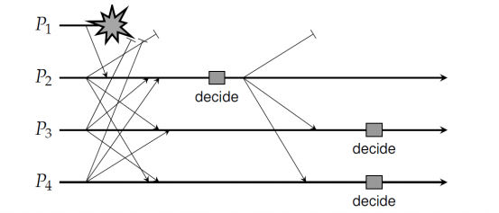
Here, there are 4 processes →
P={P1,P2,P3,P4} → and at the start of our observation, they all try to share their commands with each other process. However, in the process of sharing its commands, P1 fails, and thus, only P2 receives the commands from P1. Now, P2 has received the commands from all processes and thus, proceeds to make a decision, but P3 and P4 have not received the command from P1. Since they are maintaining a timer with them, they will be able to reliably detect that P1 has failed, but are not sure if it was able to share any command with P2 or not. Thus, here P3 and P4 do not proceed forward and wait for the next round, in which they move with the knowledge that P1 has failed and so they don't need to wait. Thus, in the next round, when they receive the command from P2, and they make their decision. This works because P2 has factored-in P1's proposed command and since P3 and P4 only wait since they can reliably detect failure, they are able to rely on the next command of P2 since it made its decision based on having received P1's command.
- In the worst case, we would have only process moving forward since it is the only non-faulty one!
While this model works, its
Fail-Stop assumption makes it non-realistic. Moreover, the reliability assumption is also not the most realistic one!
§ Building up to Paxos
§ Assumptions
- Partially synchronous system (Can be even asynchronous)
- Communication between processes may be unreliable since the messages can be lost, duplicated or re-ordered
- Corrupted messages can be detected
- Deterministic operations → Once an execution starts, we know exactly what it will do
- Processes can exhibit Crash failures, but not arbitraty failures
- Processes do not collude
Here, we need at least ( 2k + 1 ) processes, where if k processes can arbitrarily go wrong, we need k +1 other processes to be non-arbitrary so that we can reliably detect the failure and in the end, at least 1 process will run.
§ Starting Point
We assume a client-server architecture with initially one client. To this, we add a backup server, so that one server is the primary server and the other is the secondary server. To ensure that commands are executed in order, we assign sequence numbers to them, and so, each server executes commands in the same order - whatever that may be
§ 2 Server situation
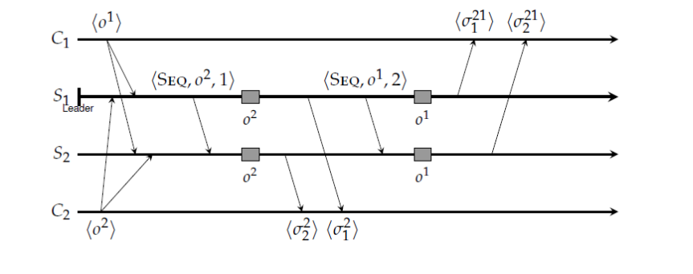
- In this scenario we have servers S1 and S2, where S1 is the primary server - also called the Leader - and S2 is the secondary server. There are two clients C1 and C2, which are requesting operations on from the servers. The servers respond to these commands as σji where i is the number of the server and j is the sequence number of the operation.
- In Paxos, a leader sends an accept message -
ACC(o,t) - to the backups when it assigns a timestamp t to operation o, and the backup server responds by sending a learned message - LRN(o,t). If the leader notices that it has no received LRN from the backups, it re-transmits the ACC. - In the first case, we think of a situation where the primary sends the ACC and then decides to move forward with accepting operation o1, in which case it assigns it sequence number 1 and sends σ11 to C1. However, S2 never received the ACC and so, looks at its timeout counter for failure and notices that it has been exceeded. It assumes the leadership role and decides to go for o2 first, thus, assigning it sequence 2 and sending σ22 to C2. This is a consensus violation.
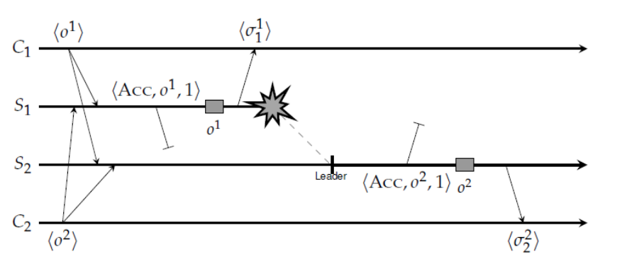
Solution → Never execute an operation before it is clear that it has been learned. Thus, if S1 does not move forward without receiving an LRN from S2, the above situation is rectified since now S1 re-transmits the message till it receives
LRN, and then both S1 and S2 have a consensus on which operation to perform.
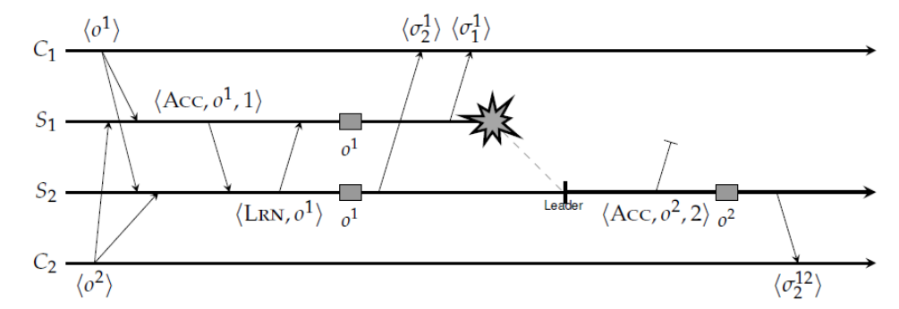
§ 3 Servers with 2 crashes
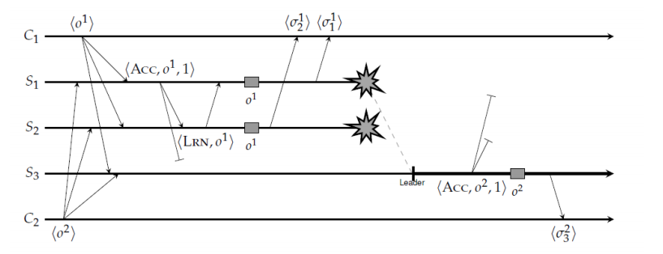
- In this case, we see the same issue and we realize that we need to extend the requirement of not moving forward before receiving LRN to S2 and S3 both. Thus, S1 should not execute unless it gets a LRN from both, S2 and S2.
- But what if LRN from S2 never reaches S1 ? → even if the LRN from S2 to S1 is lost, it should wait till it gets LRN(o1) from S3 before proceeding.
Thus, the
Paxos Fundamental Rule → A server S cannot execute an operation o until it has received LRN(o) from all other non-faulty servers.
§ Removing the Failure Detection Assumption
Let's remove the assumption that the processes can reliably detect crashes. Thus, in an asynchronous system the only solution is
Heartbeat → Each server periodically sends an
ALIVE signal to all the servers, and tracks for this signal using a timer from each server. On timeout, it tries to ping the server to determine if the server is still alive.
- But what if the Heartbeat is delayed ? → Say the heartbeat of S2 is delayed, S1 will assume the leadership and execute and S2 will assume the leadership and execute if S1 is delayed!!
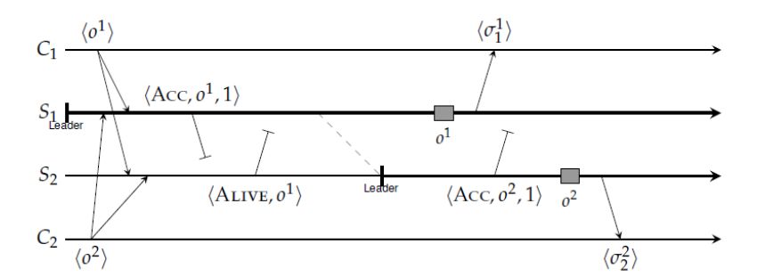
Thus, in this scenario, we need at least 3 servers so that for each server it needs 2 heartbeats to get a majority and then execute consensus.
Extending this to k faults, we need (2k+1) servers to get a majority!
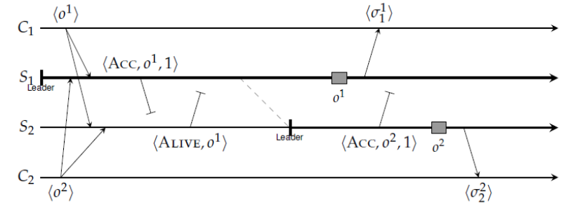
- Adapted Fundamental Rule → In Paxos with three servers, a server S cannot execute an operation o until it has received at least one (other) LRN(o) message so that it knows that a majority of servers will execute o.
Now in this 3 server 1 failure scenario let's look at another possibility. Let's say the Leader crashes after executing o1. In this case, let's say S1 executes o1 and dies, then 2 things can happen:
- S3 has no idea of the activity of S1 → S3 never received the
ACC from S1 so it waits. However, S2 received the ACC, after which it detected the crash and became the leader. S2 now sends the ACC(o2, 2) to S3, at which point S3 sees the unexpected timestamp 2 and sends a negative back to S2 that it missed o1. Thus, S2 re-transmits ACC(o1,1), and S3 is able to catch-up - S2 missed ACC(o1,1) → S2 detects the crash and becomes the leader and either sends
ACC(01,1) to S3, which then either transmits LRN(o1), or it sends ACC(o2,1) in which case S3 notices that it was expecting o1 and sends a negative allowing S2 to catch-up
Thus, Paxos (with three servers) behaves correctly when a single server crashes, regardless of when that crash took place.
§ False Crash Detection
What if the ACC by S1 is highly delayed? → In this case, S2 detects a failure and becomes a leader, while S3 receives
ACC(o1,1) after
ACC(o2,2). This can be solved by adding the identity of the current leader in messages.
- However, Paxos can still come to grinding halt when LRN form S3 is lost, which blocks S1 and S2 from doing anything → It is not Live
§ Liveness in Paxos
To deal with Liveness, we add an explicit Takeover of leadership where before a takeover, the server has to deal with any outstanding tasks by the former leader → This takeover needs to be communicated explicitly to all the servers
§ PAXOS Actual Protocol
§ General Rules on Protocols
Each proposal has a unique number, so that:
- Higher numbers take priority over lower numbers
- The proposer should be able to choose this number to be higher than anything it has ever received or seen.This can be implemented by setting Proposal Number to be a concatenation of Round Number and Server ID, so that each server stores the maxRound - the Largest round number it has seen so far and a new proposal number can easily be generated by incrementing the maxRound and concatenating it with server ID.
Each Node maintains four variable :
-
my_n → my proposal number in the current Paxos -
n_a → higher proposal number accepted -
v_a → value corresponding to the highest proposal number -
n_h → highest proposal number seen
§ Propose Phase
- A node decides to be the leader and propose
- proposer chooses
my_n > n_h - leader sends
- Upon receiving
n < n_h → reply n_h = n.
§ Accept Phase
- If the leader gets a majority of
n_a if it is not null, or a random value - If majority is not there, then restart Paxos
- Upon getting
n < n_h, else → update n_a = n, v_a = V, n_h = n and send
§ Decide Phase
- If the leader gets a majority of
DONE to the client - It keeps sending